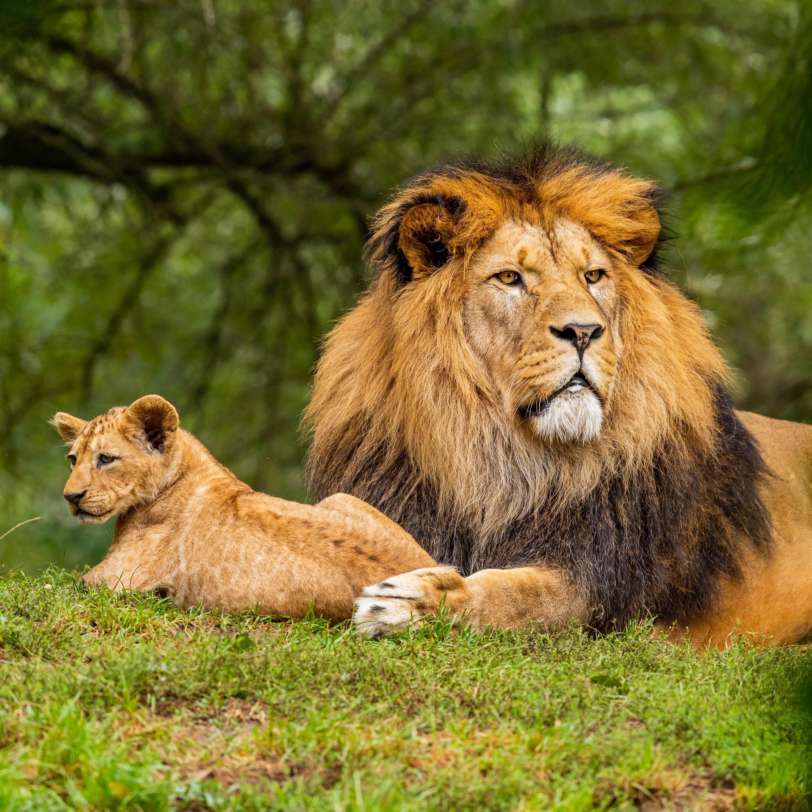
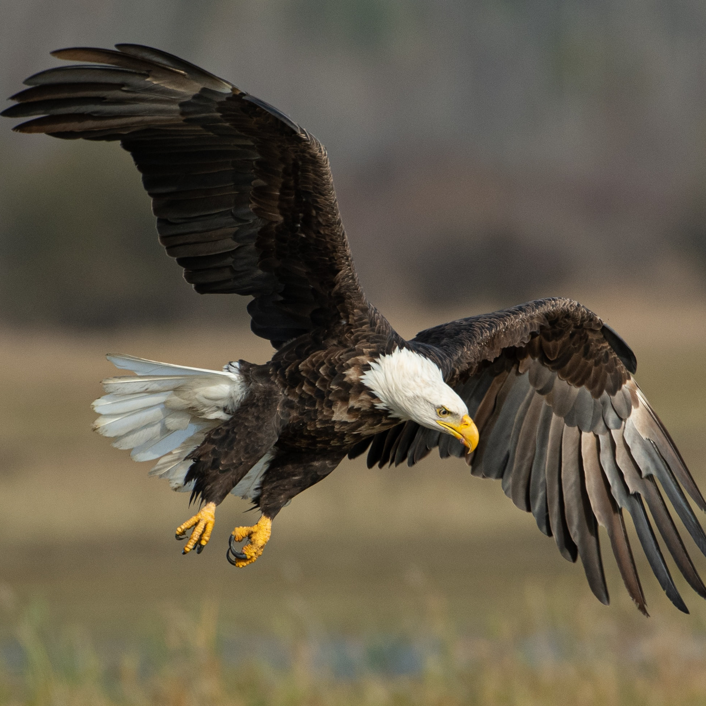
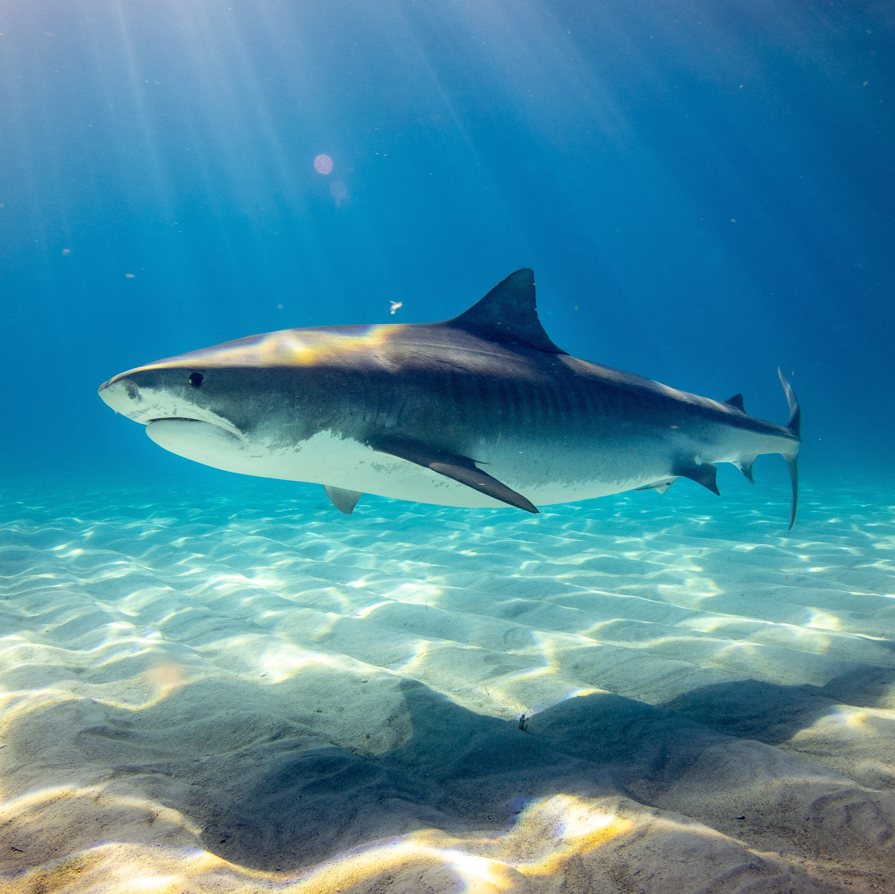

Pengertian
Karnivora adalah hewan pemakan daging. Hewan-hewan yang masuk ke
dalam golongan karnivora dikarenakan memangsa hewan lain. Hewan
jenis ini juga disebut sebagai predator.
Kira Seta (2018) dalam bukunya berjudul Berkenalan dengan Hewan
Herbivor, Karnivor, dan Omnivor menjelaskan bahwa kata karnivor
berasal dari bahasa Latin, yaitu carne yang berarti “daging” dan
vorare yang berarti “memakan”.
Sementara itu, Ullrey (2004) dalam Mammals: Carnivores (Encyclopedia
of Animal Science) mendefinisikan karnivor, pemakan daging, atau
satwaboga merupakan makhluk hidup yang memperoleh energi dan nutrisi
yang dibutuhkan dari makanan berupa jaringan hewan, baik sebagai
pemangsa maupun pebangkai. Hewan-hewan yang hanya bergantung kepada
daging hewan untuk nutrisinya disebut dengan karnivor obligat,
sedangkan hewan-hewan karnivor yang juga mengonsumsi makanan
nonhewan disebut karnivor fakultatif.
Klasifikasi
Karnivor Obligat
Karnivor obligat atau karnivor sejati adalah kelompok hewan
karnivor yang hanya bergantung kepada nutrisi yang berasal dari
daging hewan lain untuk bertahan hidup. Karnivor obligat tidak
memiliki sistem pencernaan yang memadai untuk mengolah materi
tumbuhan. Tubuh karnivor obligat tidak dapat mencerna tumbuhan
dengan baik.
Hiperkarnivor
Hiperkarnivor adalah kelompok hewan karnivor yang 70% sumber
makanannya berupa daging. Hewan yang masuk ke dalam hiperkarnivor
biasanya tidak bisa mencerna tumbuhan. Inilah yang menyebabkan
sebagian besar makanan mereka adalah daging. Karakter fisik dari
hewan ini adalah memiliki tengkorak dan otot wajah yang kuat, yang
berfungsi untuk memegang mangsa, memotong daging, dan mematahkan
tulang.
Mesokarnivor
Mesokarnivor adalah kelompok hewan karnivor yang 50% sumber
makanannya berupa daging. Mengapa hanya 50%? Lalu, apa lagi
sisanya? Selain daging, hewan jenis ini bisa memakan buah, sayur,
dan jamur. Karakter fisik dari hewan karnivor jenis ini biasanya
lebih kecil daripada hiperkarnivor. Hewan jenis ini biasanya
tinggal di lingkungan yang dekat dengan manusia.
Hipokarnivor
Hipokarnivor adalah kelompok hewan karnivor yang kebutuhan
dagingnya hanya sekitar 30% dari seluruh jenis makanannya. Hewan
karnivor jenis ini bisa makan daging, tetapi mayoritas makanannya
berupa ikan, buah-buahan, akar, dan kacang-kacangan. Hewan yang
masuk ke dalam kelompok ini biasanya disamakan dengan hewan yang
masuk ke dalam kelompok omnivor.
Karakteristik
Mempunyai gigi yang tajam dan kuat atau taring.
Memiliki rahang yang kuat dan besar.
Mempunyai kuku yang tajam atau disebut dengan cakar.
Memiliki pendengaran yang sangat baik.
Memiliki penglihatan yang sangat tajam.
Memiliki kekuatan dan kecepatan yang luar biasa.
Contoh
Singa

Singa merupakan salah satu hewan asli Afrika. Hewan ini juga
sangat dikenal dengan julukan “si Raja Hutan”. Mengapa singa
dijuluki sebagai Raja Hutan? Karena mereka mempunyai tubuh yang
sangat kuat dan ditakuti oleh hewan lainnya di hutan. Kaki singa
mampu melompat dan berlari dengan kencang. Kuku-kukunya sangat
kuat dan tajam. Begitu juga dengan gigi-giginya yang bisa
menggigit dan mencabik-cabik hewan lain. Hewan ini biasanya
menjadikan mamalia seperti sapi, rusa, dan zebra sebagai
mangsanya. Singa juga memangsa hewan kecil seperti burung,
reptil, dan serangga. Saat berburu, singa mengandalkan
penglihatan dan penciuman yang sangat tajam. Matanya bisa
melihat dengan jelas karena memiliki lensa mata yang besar
dibanding hewan lain. Lewat indera penciumannya, singa bisa
mendeteksi mangsa hingga jarak jauh.
Elang

Elang merupakan salah satu burung karnivora yang dapat ditemukan
di seluruh wilayah Indonesia. Makanan utama mereka adalah
mamalia kecil seperti tikus, kadal, tupai, dan ayam. Elang juga
memangsa serangga dan ikan. Perbedaan makanan ini tergantung
dari ukuran tubuh mereka. Elang merupakan hewan pemburu yang
sangat andal. Meski tak bergigi, elang memanfaatkan paruhnya
yang kuat untuk mengoyak mangsanya. Elang juga memiliki indra
penglihatan yang sangat tajam untuk membidik mangsa saat terbang
tinggi. Begitu mangsa berhasil ditangkap, elang menggunakan kaki
dan kuku yang tajam untuk mencengkram.
Hiu

Salah satu hewan karnivora di lautan adalah ikan hiu. Fakta
menariknya, hiu merupakan hewan purba yang sudah berevolusi
jutaan tahun sebelum peradaban manusia dimulai. Setelah
berevolusi selama jutaan tahun, otak hiu berkembang dan menjadi
salah satu hewan cerdas di bumi. Biasanya, hiu memangsa anjing
laut, penyu laut, ikan-ikan kecil, gurita, dan hewan lain yang
ada di laut. Dengan pendengaran yang sangat tajam, hiu mampu
mendeteksi suara hingga seperempat mil jauhnya. Kemampuan
uniknya ini dimanfaatkan untuk memangsa ikan dan hewan kecil.
Serigala

Walaupun masih satu keluarga dengan anjing, serigala adalah
hewan yang sangat ganas. Salah satu ciri khas serigala yakni
suara melolong di malam hari. Lolongan serigala berfungsi untuk
memberi tahu kawanannya di mana lokasi mereka. Serigala
merupakan salah satu hewan yang banyak ditemukan di Eropa.
Sayangnya, beberapa jenis serigala sedang terancam punah.
Menurut informasi, keberadaan serigala semakin berkurang setiap
tahunnya. Beberapa faktor utama yang menyebabkan populasi hewan
ini menurun adalah mereka sering diburu dan diperangkap oleh
manusia. Selain itu, sulitnya mencari mangsa seperti rusa dan
domba juga membuat mereka sulit mendapatkan makanan. Layaknya
singa, serigala juga bertahan hidup dengan memangsa hewan lain
seperti rusa, domba, kelinci, atau kambing. Serigala mempunyai
stamina yang sangat kuat, indera penglihatan, serta penciuman
yang tajam. Hal ini membuat serigala dapat berlari kencang
sehingga mangsanya akan kelelahan dan menyerah.